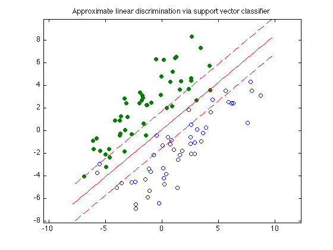

% Section 8.6.1, Boyd & Vandenberghe "Convex Optimization" % Original by Lieven Vandenberghe % Adapted for CVX by Joelle Skaf - 10/16/05 % (a figure is generated) % % The goal is to find a function f(x) = a'*x - b that classifies the non- % separable points {x_1,...,x_N} and {y_1,...,y_M} by doing a trade-off % between the number of misclassifications and the width of the separating % slab. a and b can be obtained by solving the following problem: % minimize ||a||_2 + gamma*(1'*u + 1'*v) % s.t. a'*x_i - b >= 1 - u_i for i = 1,...,N % a'*y_i - b <= -(1 - v_i) for i = 1,...,M % u >= 0 and v >= 0 % where gamma gives the relative weight of the number of misclassified % points compared to the width of the slab. % data generation n = 2; randn('state',2); N = 50; M = 50; Y = [1.5+0.9*randn(1,0.6*N), 1.5+0.7*randn(1,0.4*N); 2*(randn(1,0.6*N)+1), 2*(randn(1,0.4*N)-1)]; X = [-1.5+0.9*randn(1,0.6*M), -1.5+0.7*randn(1,0.4*M); 2*(randn(1,0.6*M)-1), 2*(randn(1,0.4*M)+1)]; T = [-1 1; 1 1]; Y = T*Y; X = T*X; g = 0.1; % gamma % Solution via CVX cvx_begin variables a(n) b(1) u(N) v(M) minimize (norm(a) + g*(ones(1,N)*u + ones(1,M)*v)) X'*a - b >= 1 - u; Y'*a - b <= -(1 - v); u >= 0; v >= 0; cvx_end % Displaying results linewidth = 0.5; % for the squares and circles t_min = min([X(1,:),Y(1,:)]); t_max = max([X(1,:),Y(1,:)]); tt = linspace(t_min-1,t_max+1,100); p = -a(1)*tt/a(2) + b/a(2); p1 = -a(1)*tt/a(2) + (b+1)/a(2); p2 = -a(1)*tt/a(2) + (b-1)/a(2); graph = plot(X(1,:),X(2,:), 'o', Y(1,:), Y(2,:), 'o'); set(graph(1),'LineWidth',linewidth); set(graph(2),'LineWidth',linewidth); set(graph(2),'MarkerFaceColor',[0 0.5 0]); hold on; plot(tt,p, '-r', tt,p1, '--r', tt,p2, '--r'); axis equal title('Approximate linear discrimination via support vector classifier'); % print -deps svc-discr2.eps
Calling Mosek 9.1.9: 204 variables, 100 equality constraints
------------------------------------------------------------
MOSEK Version 9.1.9 (Build date: 2019-11-21 11:32:15)
Copyright (c) MOSEK ApS, Denmark. WWW: mosek.com
Platform: MACOSX/64-X86
Problem
Name :
Objective sense : min
Type : CONIC (conic optimization problem)
Constraints : 100
Cones : 1
Scalar variables : 204
Matrix variables : 0
Integer variables : 0
Optimizer started.
Presolve started.
Linear dependency checker started.
Linear dependency checker terminated.
Eliminator started.
Freed constraints in eliminator : 0
Eliminator terminated.
Eliminator - tries : 1 time : 0.00
Lin. dep. - tries : 1 time : 0.00
Lin. dep. - number : 0
Presolve terminated. Time: 0.00
Problem
Name :
Objective sense : min
Type : CONIC (conic optimization problem)
Constraints : 100
Cones : 1
Scalar variables : 204
Matrix variables : 0
Integer variables : 0
Optimizer - threads : 8
Optimizer - solved problem : the dual
Optimizer - Constraints : 3
Optimizer - Cones : 1
Optimizer - Scalar variables : 103 conic : 3
Optimizer - Semi-definite variables: 0 scalarized : 0
Factor - setup time : 0.00 dense det. time : 0.00
Factor - ML order time : 0.00 GP order time : 0.00
Factor - nonzeros before factor : 6 after factor : 6
Factor - dense dim. : 0 flops : 1.22e+03
ITE PFEAS DFEAS GFEAS PRSTATUS POBJ DOBJ MU TIME
0 1.0e+00 1.0e+00 2.0e+00 0.00e+00 1.000000000e+00 0.000000000e+00 1.0e+00 0.00
1 5.4e-01 5.4e-01 5.0e-01 7.32e-01 4.022341411e+00 3.352701347e+00 5.4e-01 0.01
2 1.8e-01 1.8e-01 4.2e-02 1.93e+00 3.625762002e+00 3.482760180e+00 1.8e-01 0.01
3 6.8e-02 6.8e-02 1.2e-02 1.36e+00 2.712319677e+00 2.662292697e+00 6.8e-02 0.01
4 2.7e-02 2.7e-02 3.4e-03 8.62e-01 2.288778881e+00 2.267268446e+00 2.7e-02 0.01
5 1.5e-02 1.5e-02 1.5e-03 7.41e-01 2.115194629e+00 2.102340577e+00 1.5e-02 0.01
6 6.5e-03 6.5e-03 4.8e-04 8.05e-01 1.961321530e+00 1.955476117e+00 6.5e-03 0.01
7 3.4e-03 3.4e-03 1.9e-04 9.15e-01 1.902225605e+00 1.899088083e+00 3.4e-03 0.01
8 1.1e-03 1.1e-03 3.7e-05 9.36e-01 1.852267765e+00 1.851266681e+00 1.1e-03 0.01
9 4.9e-04 4.9e-04 1.1e-05 9.34e-01 1.838260383e+00 1.837814862e+00 4.9e-04 0.01
10 3.4e-05 3.4e-05 2.3e-07 9.96e-01 1.826707776e+00 1.826678930e+00 3.4e-05 0.01
11 4.8e-06 4.8e-06 1.3e-08 9.98e-01 1.825838396e+00 1.825834275e+00 4.8e-06 0.01
12 1.1e-06 1.1e-06 1.5e-09 1.00e+00 1.825734335e+00 1.825733365e+00 1.1e-06 0.01
13 3.0e-07 3.0e-07 2.0e-10 1.00e+00 1.825709119e+00 1.825708865e+00 3.0e-07 0.01
14 4.3e-09 4.3e-09 3.3e-13 1.00e+00 1.825700346e+00 1.825700342e+00 4.3e-09 0.01
Optimizer terminated. Time: 0.02
Interior-point solution summary
Problem status : PRIMAL_AND_DUAL_FEASIBLE
Solution status : OPTIMAL
Primal. obj: 1.8257003460e+00 nrm: 3e+00 Viol. con: 7e-16 var: 0e+00 cones: 0e+00
Dual. obj: 1.8257003425e+00 nrm: 1e+00 Viol. con: 0e+00 var: 2e-09 cones: 0e+00
Optimizer summary
Optimizer - time: 0.02
Interior-point - iterations : 14 time: 0.01
Basis identification - time: 0.00
Primal - iterations : 0 time: 0.00
Dual - iterations : 0 time: 0.00
Clean primal - iterations : 0 time: 0.00
Clean dual - iterations : 0 time: 0.00
Simplex - time: 0.00
Primal simplex - iterations : 0 time: 0.00
Dual simplex - iterations : 0 time: 0.00
Mixed integer - relaxations: 0 time: 0.00
------------------------------------------------------------
Status: Solved
Optimal value (cvx_optval): +1.8257
